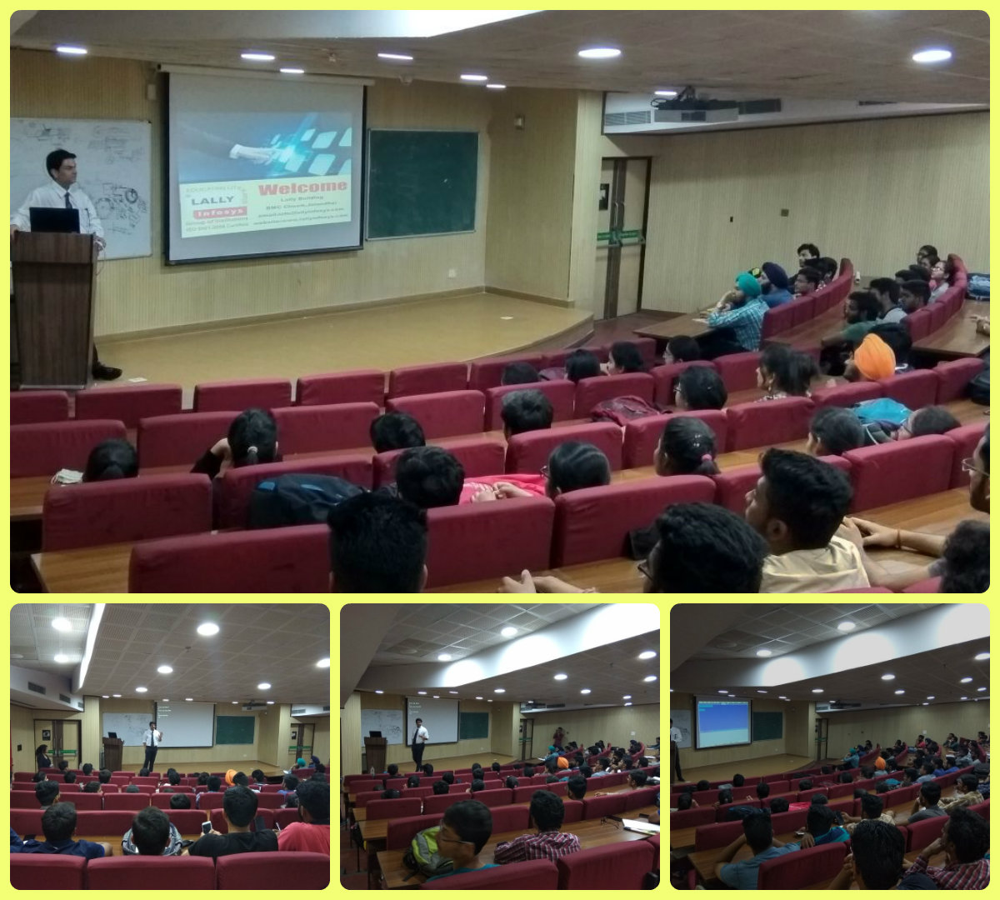
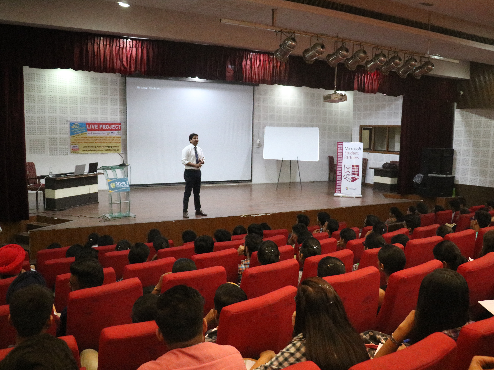
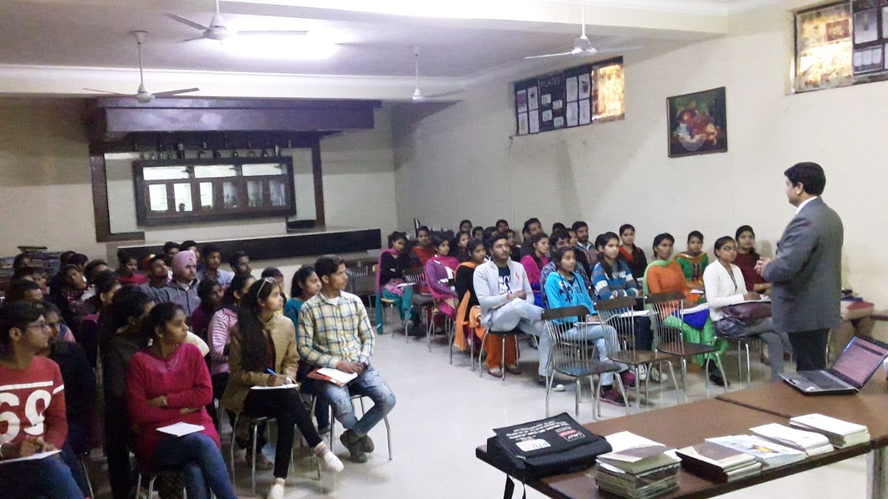
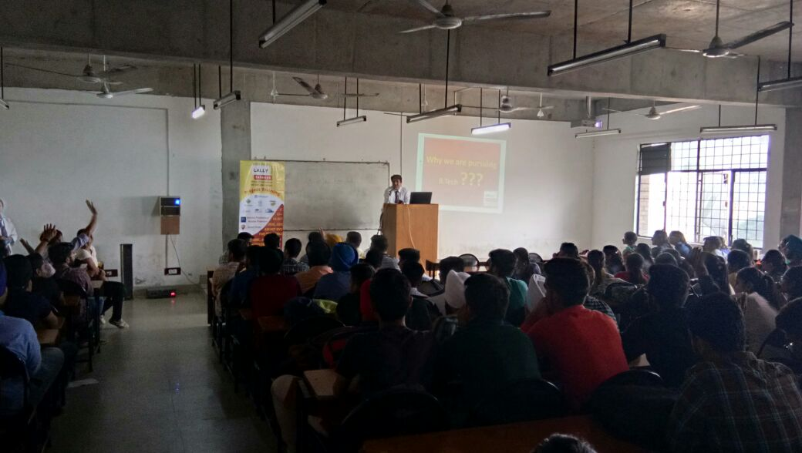
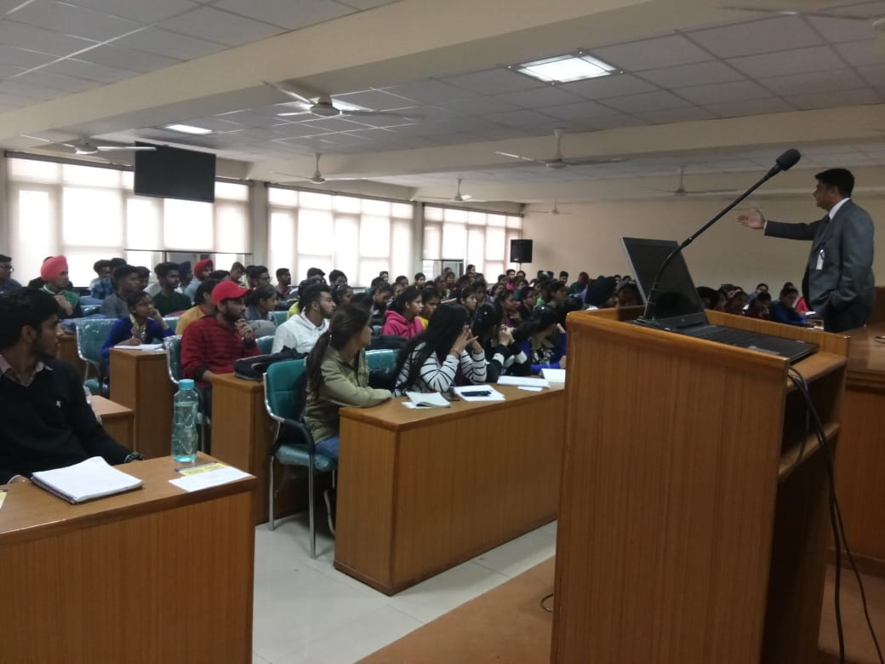
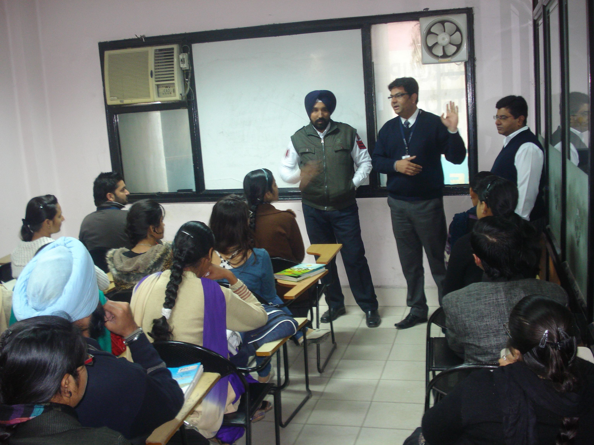
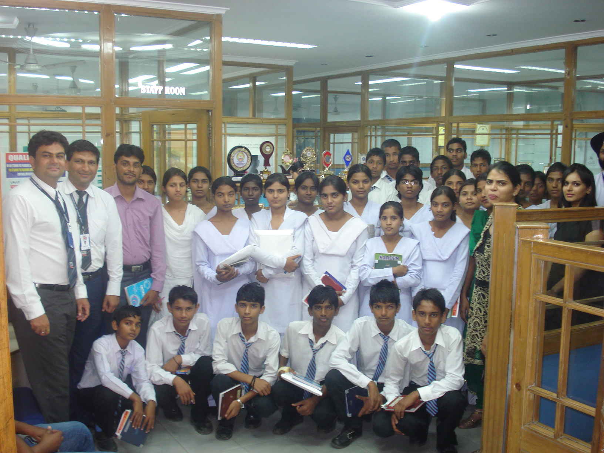
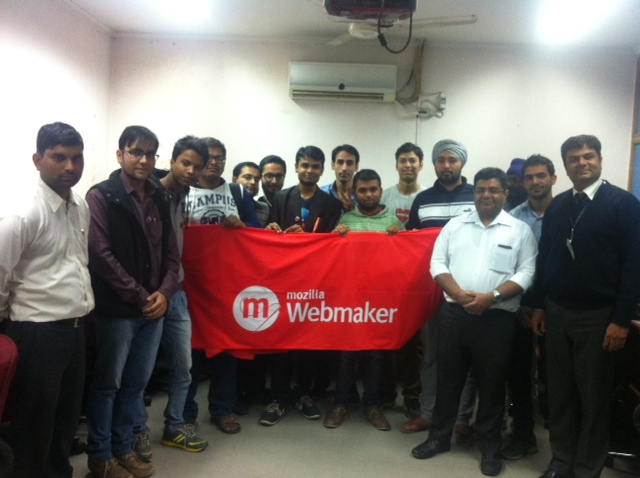
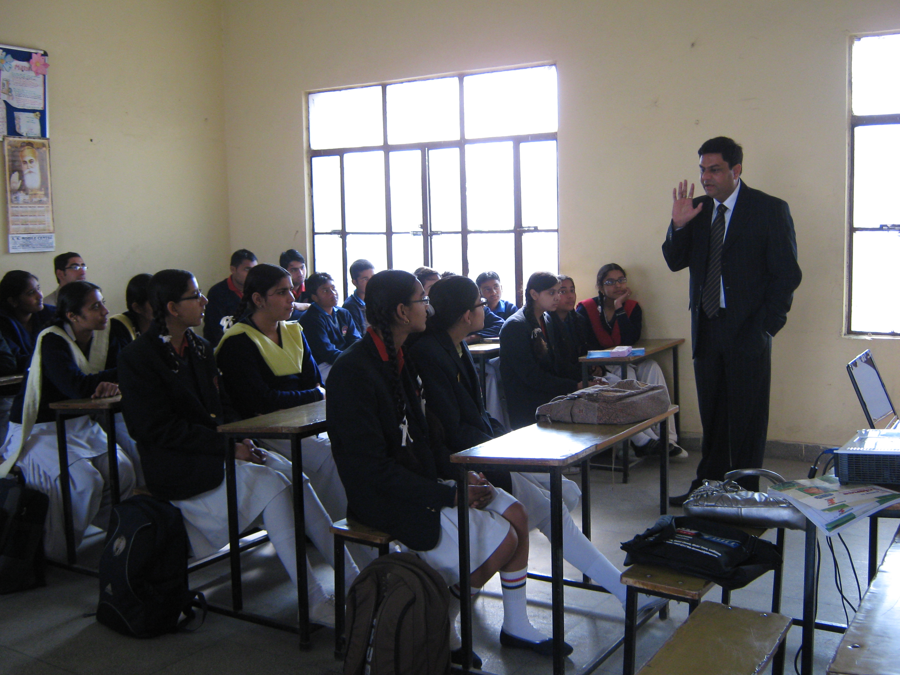

MK.
Guest Lectures
Technical Guidance Programe
(Doordarshan Kendar Govt. of India)

Technical Guidance Programe
(Dr. B.R. Ambedkar National Intitute of Technology)

Guest Lecture on New Programming Languages
(DAVIET)

Technical Guidance Programe
(DIPS IT & Management)

Technical Guidance Programe
(GNDU Regional Centre)

Guest Lecture
(GNDU)

Seminar on uses of IT in Traffic MGT. System

Career Guidance to School Students

Seminar on Mozilla FireFox

Career Guidance in IT